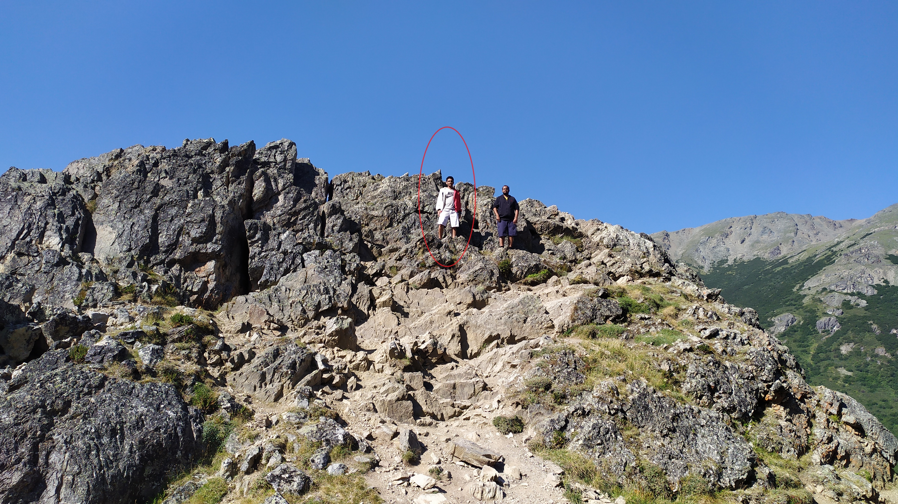

Multi-robot Synchronization
Devol Robots · Jaka
- Sub-millisecond synchronization between two Jaka robots.
- Used barrier-stop threading to coordinate motion deterministically.
- Won a deployment project with Faratronic China — a $4B customer.
Mechanical & Robotics Engineer
I'm Suraj Kumar — a first-principles engineer with three years of zero-to-one work across industrial manipulators, autonomous UAS, and brain-computer interfaces. Currently integrating production robotics at Devol Robots in Kuala Lumpur.

I'm a Malaysian mechanical engineer who works at the seam between hardware and software — the place where a CAD model becomes a moving robot, where firmware decides how a sensor behaves, where a CAM toolpath becomes a finished part.
Across three startup roles I've done product design, structural and thermal analysis, CNC manufacturing, autopilot configuration, Jetson AGX setup, and industrial robot integration. I've trained interns, pulled investor demos together, and set design requirements for shipping hardware.
I learn fast, work to a tight standard, and care most about the stuff that turns a prototype into a product.
Mechanical & Robotics Engineer
Firmware Engineer & Mechanical Product Design
Co-Founder & CTO
Thermal Engineer
Robotics Engineer (ME Summer Projects)
Manufacturing Engineer
Computer Vision Engineer
Selected work — leaning toward robotics integration, autonomy, and robotic manufacturing.
Devol Robots · Jaka
Devol Robots · Python · CV
Devol Robots
Devol Robots · MVVM C++
Sherpy Inc.
Sherpy Inc.
Mahmoudian Labs · ROS
Sherpy Inc. · Unreal · ArduPilot SITL
Sherpy Inc.
Sherpy Inc.
Specere Labs · COMSOL
RODETUR · Zucrow Labs
Open to talk about robotics integration, autonomy, and hardware / firmware roles. Email is the fastest way.